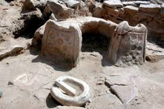
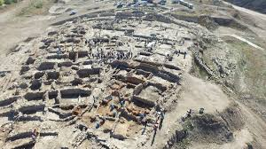

Kütahya İlinin 26. km kuzeybatısında yer alan Seyitömer Höyüğü 150x140 m. çapında 23.5 m. yüksekliğinde eski bir yerleşim yeridir. Höyük mavi yeşil renkli marn adı verilen killi kayalık tabakanın üzerinde oturmakta ve bu tabakanın altında da Linyit kömürü tabakası bulunmaktadır.


 "Kütahya"ya dönmek için basın
"Kütahya"ya dönmek için basın